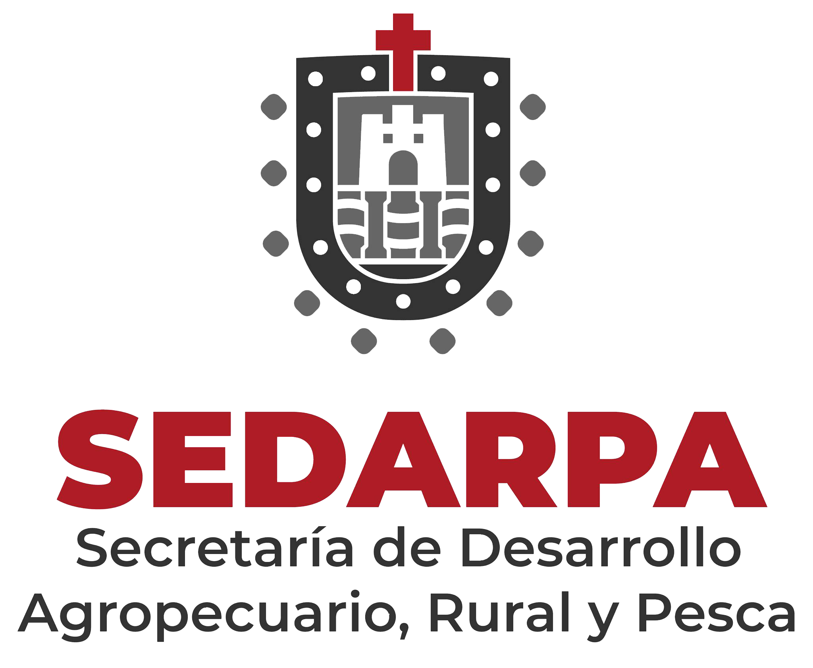

Secretaría de Desarrollo Agropecuario, Rural y Pesca
Sistema de Registro Estatal de Pesca y Acuacultura REPA > Login | Identificación de Usuario

R.E.P.A / REPA
Registro de Pesca y Acuacultura
Identificación de Usuario
Ingrese su CURP:
Ingrese su contraseña:
¿Perdiste tu contraseña? Recupérala aquí
Consultar Aviso de Privacidad
INGRESAR
CREAR CUENTA
R.E.P.A / REPA
Creación de Cuenta
Ingrese su CURP (18 caracteres):
Ingrese su correo electrónico:
Cree una contraseña:
He leído y acepto el
Aviso de Privacidad
.
REGISTRARME
YA TENGO CUENTA